PAÓ
Para quem ama o que faz
90 imagens individuais reconstruídas e roteiro para execução da animação.
As imagens são reconstruções de referência, não quadros de uma animação pronta. Use os números 001–090 para a ordem. Timestamps da prancha original não são confiáveis. Texto de interface e continuidade devem seguir o roteiro.
Roteiro completo em Markdown · Índice de arquivos e dimensões · Prancha aprovada · Identidade do PAÓ
A história
Um criador dedicado tenta fazer seu conteúdo encontrar pessoas. Depois de publicar, ajustar e insistir sem resposta, o PAÓ se cansa. Ele decide aparecer de forma mais pessoal; as reações começam no celular. Quando um comentário finalmente acende, ele percebe que encontrou alguém. O final celebra continuar criando por amor ao trabalho, independente do engajamento.
Regra principal de continuidade
Ícones apagados durante as tentativas. A virada acontece no quadro 082: o mesmo balão cinza passa a emitir luz. A rede responde depois. Refazer letras e números em camadas editáveis, conferindo o roteiro.
01. O criador começa · 001–008
Ação e intenção: PAÓ trabalha sozinho diante do monitor. Ele procura uma boa ideia, escreve, apaga e reformula a mensagem. O esforço aparece no olhar e na postura, antes de qualquer métrica.
Câmera: Planos de mesa alternados com insertos da interface. Segurar o enquadramento durante a digitação.
Movimento e expressão: Olhar acompanha as palavras; asas digitam em pequenos gestos. Piscar antes de mudar de ideia.
Transição: A luz do monitor conduz à revelação da central de criação.
Som sugerido: Teclas discretas, ambiente noturno, caneca apoiada.
001 — PAÓ atrás do monitor1672 × 941 px ·
Baixar PNG · linha 1, coluna 1 da prancha.
1672 × 941 px ·
Baixar PNG · linha 1, coluna 2 da prancha.
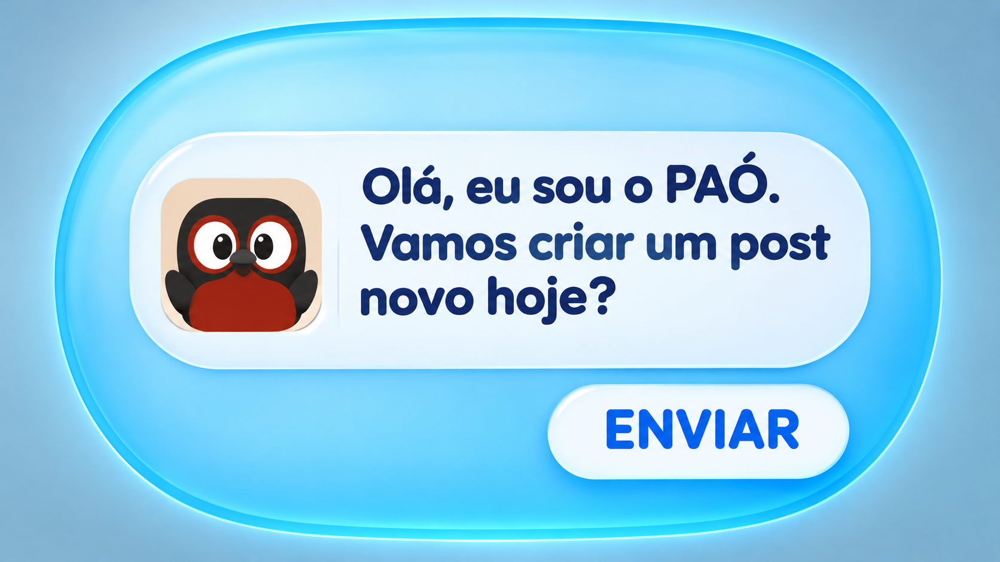
003 — Convite para criar um post1672 × 941 px ·
Baixar PNG · linha 1, coluna 3 da prancha.
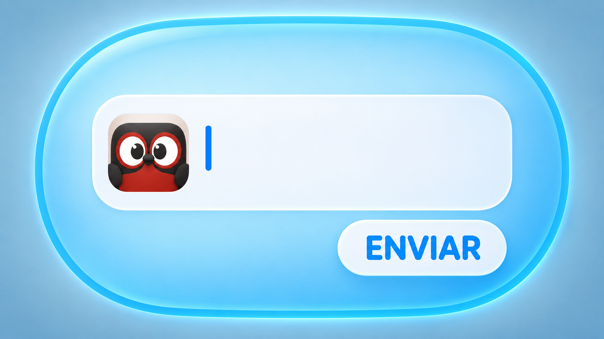
004 — Mensagem em elaboração1672 × 941 px ·
Baixar PNG · linha 1, coluna 4 da prancha.
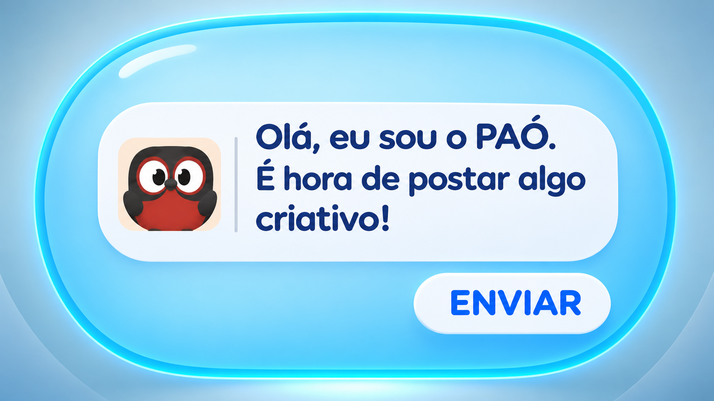
005 — Uma ideia para compartilhar1672 × 941 px ·
Baixar PNG · linha 1, coluna 5 da prancha.
1672 × 941 px ·
Baixar PNG · linha 1, coluna 6 da prancha.
1672 × 941 px ·
Baixar PNG · linha 1, coluna 7 da prancha.
1672 × 941 px ·
Baixar PNG · linha 1, coluna 8 da prancha.
02. O universo das redes · 009–015
Ação e intenção: A central ganha luz. Os painéis revelam o mundo que o PAÓ acompanha: notificações de diferentes redes e sinais de interação. O personagem se anima com a possibilidade de compartilhar o que cria.
Câmera: Abrir do plano distante para o geral; depois aproximar da face e percorrer os cartões em perspectiva.
Movimento e expressão: Acender o ambiente em etapas; painéis se organizam com atraso entre si. Cartões passam como um fluxo.
Transição: Do movimento dos cartões para um pequeno intervalo musical.
Som sugerido: Ambiente da central e pequenas notificações, sem sobrecarregar.
009 — A central na penumbra1672 × 941 px ·
Baixar PNG · linha 1, coluna 9 da prancha.
1672 × 941 px ·
Baixar PNG · linha 1, coluna 10 da prancha.
1672 × 941 px ·
Baixar PNG · linha 2, coluna 1 da prancha.
1672 × 941 px ·
Baixar PNG · linha 2, coluna 2 da prancha.
1672 × 941 px ·
Baixar PNG · linha 2, coluna 3 da prancha.
1672 × 941 px ·
Baixar PNG · linha 2, coluna 4 da prancha.
1672 × 941 px ·
Baixar PNG · linha 2, coluna 5 da prancha.
03. Ritmo de criação · 016–017
Ação e intenção: Uma passagem pelo espaço musical traduz a energia e o ritmo do trabalho criativo. Não apresentar como uma nova funcionalidade da PAÓ.
Câmera: Movimento suave pelo piano e linhas curvas. Dois quadros são poses da mesma passagem.
Movimento e expressão: Papéis e notas se deslocam com leveza. Evitar prolongar esse desvio narrativo.
Transição: Corte para a sala dos sinais de engajamento.
Som sugerido: Ponte musical curta.
016 — Passagem pelo espaço musical1672 × 941 px ·
Baixar PNG · linha 2, coluna 6 da prancha.
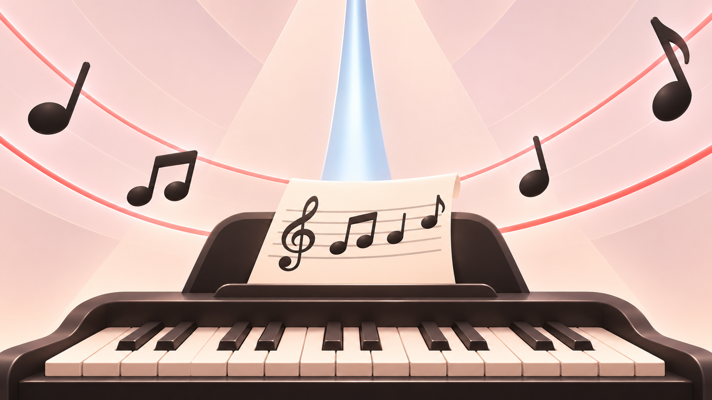
017 — Papel e ritmo1672 × 941 px ·
Baixar PNG · linha 2, coluna 7 da prancha.
04. Algo não responde · 018–022
Ação e intenção: Na sala de engajamento, corações, comentários, compartilhamentos e sinos estão apagados. PAÓ percebe a ausência de resposta, se assusta e procura entender.
Câmera: Plano geral estabelece o espaço; detalhe do balão inativo; close da reação; volta ao personagem com relatório.
Movimento e expressão: O olhar encontra o problema antes das asas irem às bochechas. Sustentar a surpresa antes de pegar o papel.
Transição: A consulta ao papel leva ao close do post.
Som sugerido: A música abre espaço para uma pequena pausa.
018 — Sala de engajamento apagada1672 × 941 px ·
Baixar PNG · linha 2, coluna 8 da prancha.
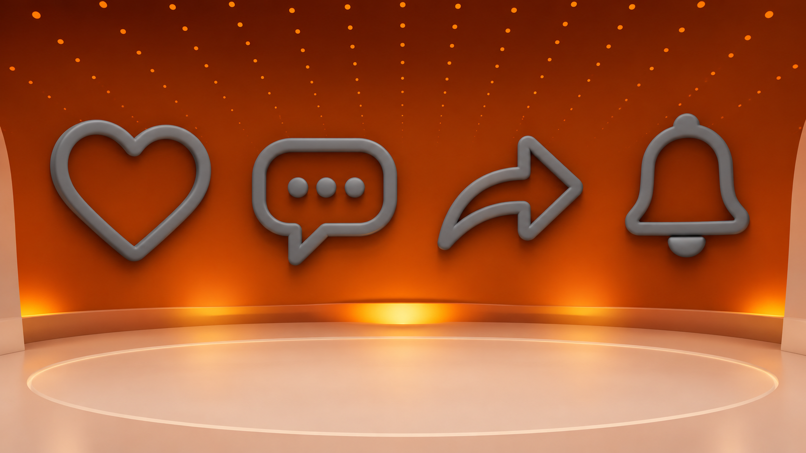
019 — Rede de sinais inativos1672 × 941 px ·
Baixar PNG · linha 2, coluna 9 da prancha.
1672 × 941 px ·
Baixar PNG · linha 2, coluna 10 da prancha.
1672 × 941 px ·
Baixar PNG · linha 3, coluna 1 da prancha.
1672 × 941 px ·
Baixar PNG · linha 3, coluna 2 da prancha.
05. O post teve pouco alcance · 023–023
Ação e intenção: Mostrar o conteúdo publicado: a imagem do pôr do sol e poucos resultados. A referência de métrica é 2 curtidas, 0 comentários e 0 compartilhamentos.
Câmera: Inserto inclinado do cartão, tempo suficiente para ler.
Movimento e expressão: Movimento mínimo. A informação deve ser compreendida antes do próximo corte.
Transição: PAÓ decide tentar novamente.
Som sugerido: Som curto de papel ou interface.
023 — Post com duas curtidas1672 × 941 px ·
Baixar PNG · linha 3, coluna 3 da prancha.
06. Possibilidades guardadas · 024–024
Ação e intenção: Passagem visual pelo arquivo de recursos e ideias. Os baús pertencem ao cenário herdado do storyboard; nesta história representam repertório disponível, não moedas, XP ou recompensa por likes.
Câmera: Plano amplo em perspectiva, personagem opcional conforme a imagem.
Movimento e expressão: Deslocamento de câmera breve; manter a metáfora simples.
Transição: Retorno imediato ao console.
Som sugerido: Transição musical.
024 — Arquivo de repertório1672 × 941 px ·
Baixar PNG · linha 3, coluna 4 da prancha.
07. Continuar criando · 025–028
Ação e intenção: De volta à mesa, PAÓ aciona o controle circular vermelho e reconhece a frustração. A mensagem se transforma em incentivo: continuar criando apesar do resultado.
Câmera: Perfil de mesa, detalhe do botão e insertos do compositor.
Movimento e expressão: Preparar a asa antes de apertar; botão afunda e volta. Texto surge em blocos legíveis.
Transição: Corte para a verificação do balão.
Som sugerido: Clique físico macio e digitação.
025 — Volta ao console1672 × 941 px ·
Baixar PNG · linha 3, coluna 5 da prancha.
1672 × 941 px ·
Baixar PNG · linha 3, coluna 6 da prancha.
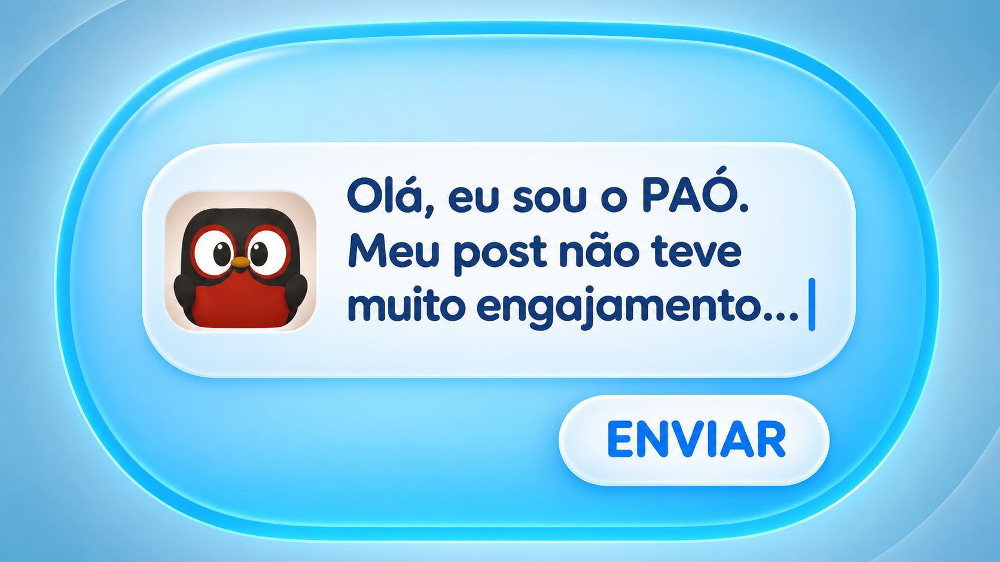
027 — Reconhecer a frustração1672 × 941 px ·
Baixar PNG · linha 3, coluna 7 da prancha.
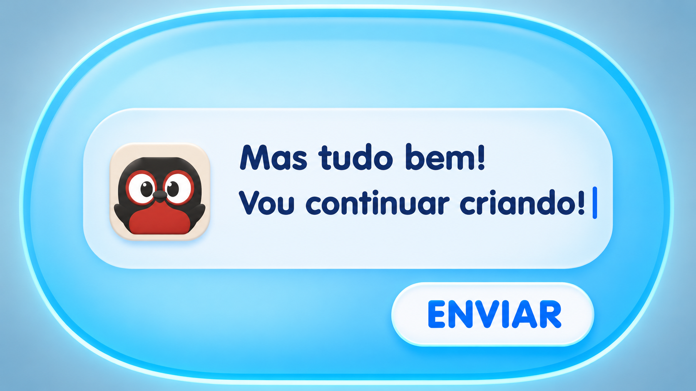
028 — Decidir continuar criando1672 × 941 px ·
Baixar PNG · linha 3, coluna 8 da prancha.
08. Verificar o resultado · 029–034
Ação e intenção: PAÓ se aproxima, pensa, inspeciona o balão ainda cinza e consulta os popups do post. Os resultados continuam baixos. Os ícones da sala permanecem apagados.
Câmera: Pequeno aparecimento do personagem, médio de reflexão, geral do balão e insertos dos popups.
Movimento e expressão: Leve antecipação ao espiar; bico e pupilas conduzem a reflexão. Não acender ícones de fundo.
Transição: PAÓ sai em busca de outra solução.
Som sugerido: Ambiente contido; sem som de sucesso.
029 — Espiar os resultados1672 × 941 px ·
Baixar PNG · linha 3, coluna 9 da prancha.
1672 × 941 px ·
Baixar PNG · linha 3, coluna 10 da prancha.
1672 × 941 px ·
Baixar PNG · linha 4, coluna 1 da prancha.
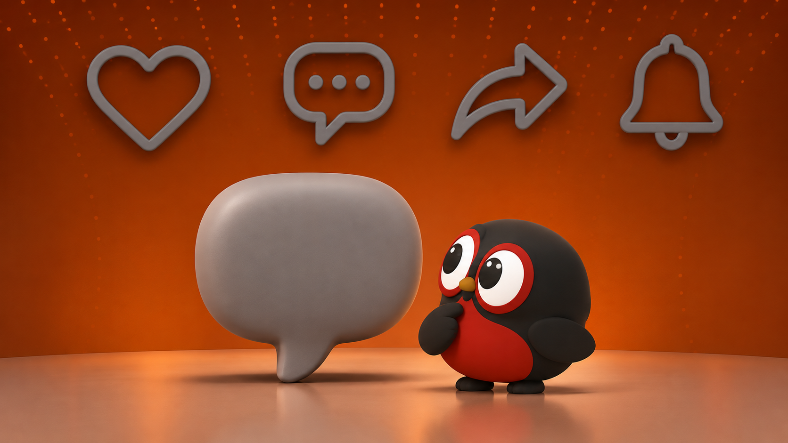
032 — O balão continua apagado1672 × 941 px ·
Baixar PNG · linha 4, coluna 2 da prancha.
1672 × 941 px ·
Baixar PNG · linha 4, coluna 3 da prancha.
1672 × 941 px ·
Baixar PNG · linha 4, coluna 4 da prancha.
09. Pesquisar e ajustar · 035–038
Ação e intenção: PAÓ atravessa a central e revisa o conteúdo no painel. Ele tenta melhorar a apresentação e a publicação, mantendo a imagem e a ideia reconhecíveis.
Câmera: Planos abertos das passarelas e do dashboard; personagem pequeno dá escala.
Movimento e expressão: Passos com apoio dos pés; painéis mudam por etapas. Não deslizar o personagem como um adesivo.
Transição: Aproximar do controle e do rosto.
Som sugerido: Passos suaves e sinais de interface.
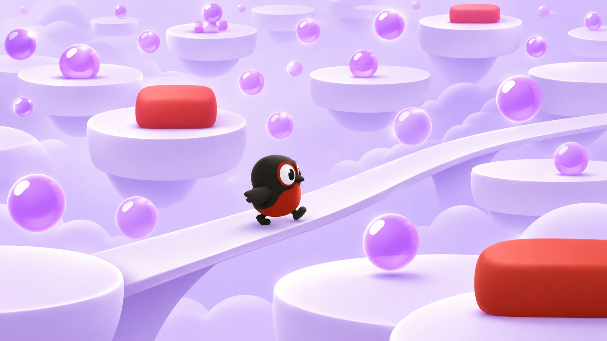
035 — Percorrer as passarelas1672 × 941 px ·
Baixar PNG · linha 4, coluna 5 da prancha.
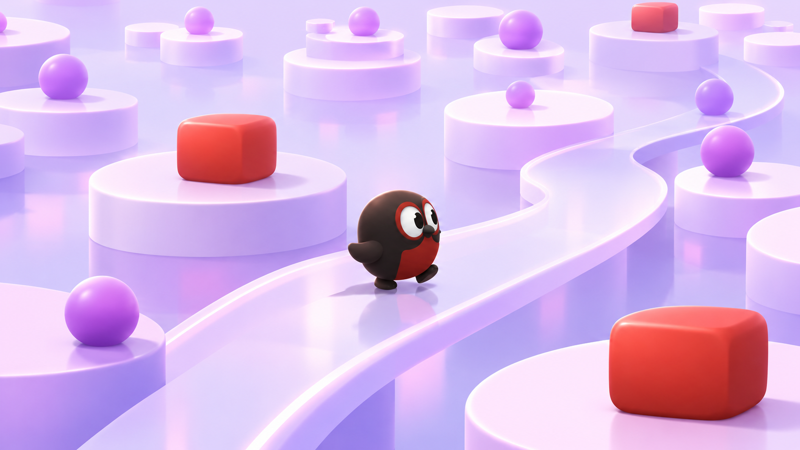
036 — Buscar outra abordagem1672 × 941 px ·
Baixar PNG · linha 4, coluna 6 da prancha.
1672 × 941 px ·
Baixar PNG · linha 4, coluna 7 da prancha.
1672 × 941 px ·
Baixar PNG · linha 4, coluna 8 da prancha.
10. Publicar outra tentativa · 039–043
Ação e intenção: A asa aciona o controle, PAÓ pensa, confere a sequência de posts e aperta POSTAR. O botão rectangular verde é diferente do controle circular especial vermelho.
Câmera: Detalhe da asa, close do rosto, vista superior do tablet, detalhe da tecla.
Movimento e expressão: Piscada transforma o olhar atento em avaliação. Contato da asa precisa coincidir com o botão.
Transição: Voltar à sala para observar a consequência.
Som sugerido: Clique de publicação, seguido de espaço para a espera.
039 — Acionar o controle1672 × 941 px ·
Baixar PNG · linha 4, coluna 9 da prancha.
1672 × 941 px ·
Baixar PNG · linha 4, coluna 10 da prancha.
1672 × 941 px ·
Baixar PNG · linha 5, coluna 1 da prancha.
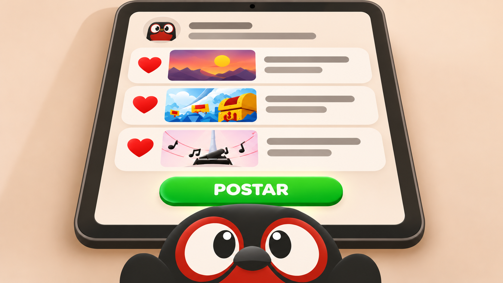
042 — Sequência de conteúdos no tablet1672 × 941 px ·
Baixar PNG · linha 5, coluna 2 da prancha.
1672 × 941 px ·
Baixar PNG · linha 5, coluna 3 da prancha.
11. A espera e a frustração · 044–049
Ação e intenção: PAÓ espera. O balão continua apagado. A esperança vai cedendo ao desgaste até ele cobrir o rosto com uma asa.
Câmera: Alternar rosto e objeto. Evitar uma montagem de reação sem mostrar o motivo.
Movimento e expressão: Pálpebras descem gradualmente; as asas chegam ao rosto depois da percepção. Preservar os óculos.
Transição: Ele resolve tentar uma melhoria maior.
Som sugerido: Reduzir a energia musical; respiração ou suspiro discreto.
044 — Esperar uma resposta1672 × 941 px ·
Baixar PNG · linha 5, coluna 4 da prancha.
1672 × 941 px ·
Baixar PNG · linha 5, coluna 5 da prancha.
1672 × 941 px ·
Baixar PNG · linha 5, coluna 6 da prancha.
1672 × 941 px ·
Baixar PNG · linha 5, coluna 7 da prancha.
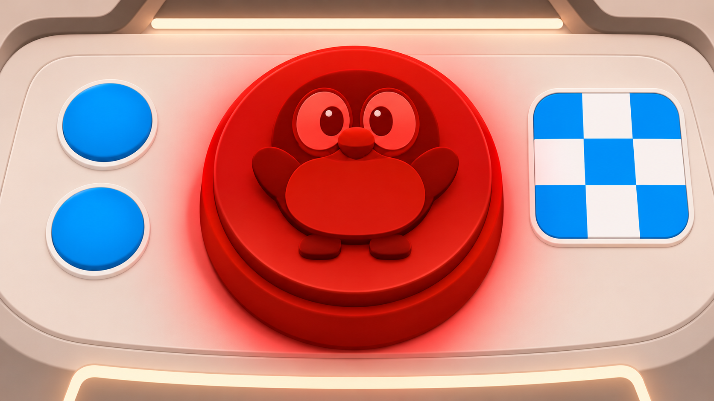
048 — O botão especial permanece à vista1672 × 941 px ·
Baixar PNG · linha 5, coluna 8 da prancha.
1672 × 941 px ·
Baixar PNG · linha 5, coluna 9 da prancha.
12. Mais uma solução · 050–056
Ação e intenção: PAÓ passa por uma estação de manutenção, observa diagnósticos e testa ferramentas. Os painéis agora mostram curtidas/comentários e crescimento de visualizações. Ele publica de novo.
Câmera: Geral da estação, contra-plano do monitor, close da face, geral dos painéis e detalhe de POSTAR.
Movimento e expressão: Braços mecânicos seguem arcos controlados. Indicadores mudam em sequência, sem sugerir sucesso final antecipado.
Transição: Cortar de POSTAR para o balão ainda inativo.
Som sugerido: Mecânica leve e cliques pontuais.
050 — Caminho até a manutenção1672 × 941 px ·
Baixar PNG · linha 5, coluna 10 da prancha.
1672 × 941 px ·
Baixar PNG · linha 6, coluna 1 da prancha.
1672 × 941 px ·
Baixar PNG · linha 6, coluna 2 da prancha.
1672 × 941 px ·
Baixar PNG · linha 6, coluna 3 da prancha.
1672 × 941 px ·
Baixar PNG · linha 6, coluna 4 da prancha.
1672 × 941 px ·
Baixar PNG · linha 6, coluna 5 da prancha.
1672 × 941 px ·
Baixar PNG · linha 6, coluna 6 da prancha.
13. O resultado ainda não vem · 057–062
Ação e intenção: O balão continua cinza. A câmera se afasta para mostrar a solidão do PAÓ na central, com o botão circular vermelho desfocado no primeiro plano.
Câmera: Detalhe do balão, depois geral com profundidade. Os quatro quadros distantes são uma espera sustentada, não quatro cenas novas.
Movimento e expressão: Pouquíssima ação. Movimento de câmera e respiração podem sustentar o plano.
Transição: Corte para o cansaço na mesa.
Som sugerido: Ambiente presente; evitar notificações positivas.
057 — O resultado continua igual1672 × 941 px ·
Baixar PNG · linha 6, coluna 7 da prancha.
1672 × 941 px ·
Baixar PNG · linha 6, coluna 8 da prancha.
1672 × 941 px ·
Baixar PNG · linha 6, coluna 9 da prancha.
1672 × 941 px ·
Baixar PNG · linha 6, coluna 10 da prancha.
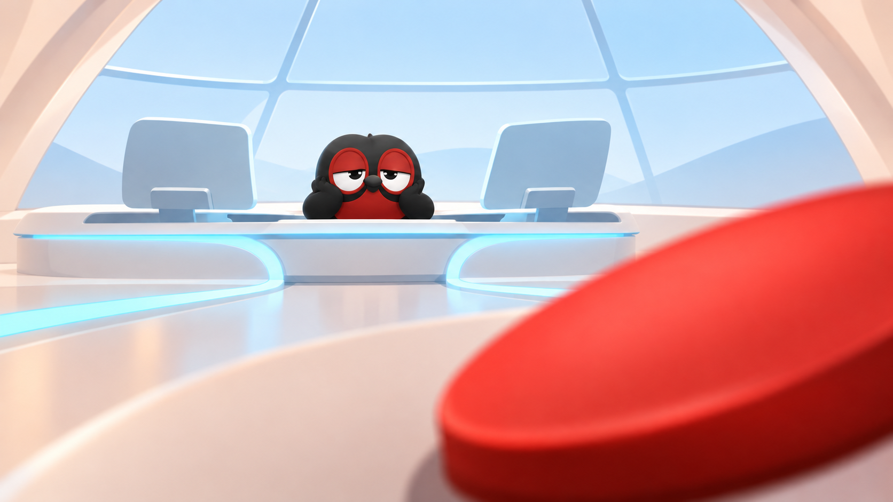
061 — A espera se prolonga1672 × 941 px ·
Baixar PNG · linha 7, coluna 1 da prancha.
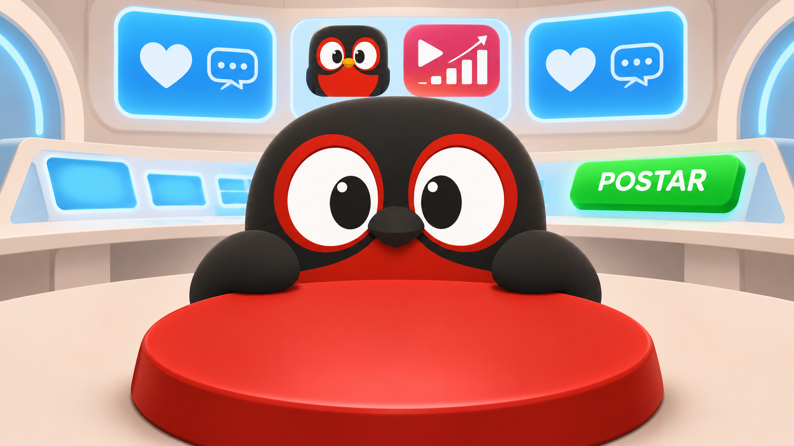
062 — Segurar a pausa1672 × 941 px ·
Baixar PNG · linha 7, coluna 2 da prancha.
14. Cansaço · 063–066
Ação e intenção: PAÓ perde energia, fecha os olhos, retira os óculos e afunda atrás da mesa. É a pausa emocional do filme.
Câmera: Médio fixo com monitor, caneca e óculos. Preservar a relação espacial entre as peças.
Movimento e expressão: Ordem: asa alcança óculos; olhos fecham; óculos saem; olhar cansado reaparece; corpo desce. Não executar tudo junto.
Transição: A asa procura o botão especial.
Som sugerido: Óculos encostando e um suspiro.
063 — Olhar cansado na mesa1672 × 941 px ·
Baixar PNG · linha 7, coluna 3 da prancha.
1672 × 941 px ·
Baixar PNG · linha 7, coluna 4 da prancha.
1672 × 941 px ·
Baixar PNG · linha 7, coluna 5 da prancha.
1672 × 941 px ·
Baixar PNG · linha 7, coluna 6 da prancha.
15. A última ideia: aparecer · 067–072
Ação e intenção: PAÓ aperta o botão vermelho e prepara uma fantasia de si mesmo para criar um conteúdo mais pessoal. As vistas da abertura da fantasia explicam a troca de linguagem.
Câmera: Detalhe do botão, detalhes da fantasia, retrato e corpo inteiro.
Movimento e expressão: Separar fantasia do corpo do PAÓ; explicar como ele entra/usa a peça, sem metamorfose arbitrária.
Transição: Corte para a gravação vertical nas redes.
Som sugerido: Clique, abertura do mecanismo e entrada de música mais leve.
16. O conteúdo encontra pessoas · 073–077
Ação e intenção: O vídeo com a fantasia aparece na rede. As reações aumentam ao longo dos três planos do celular, chegando a muitos likes e à indicação 12,8 mil.
Câmera: Retratos da gravação, giro e celular em perspectiva sobre a mesa.
Movimento e expressão: Corações surgem com variação de atraso e trajetória. O aumento é progressivo, não instantâneo em todos os painéis.
Transição: Contrapor a resposta nas redes ao criador ainda exausto.
Som sugerido: Notificações crescem com moderação; trilha retoma energia.
073 — Gravar para as redes1672 × 941 px ·
Baixar PNG · linha 8, coluna 3 da prancha.
1672 × 941 px ·
Baixar PNG · linha 8, coluna 4 da prancha.
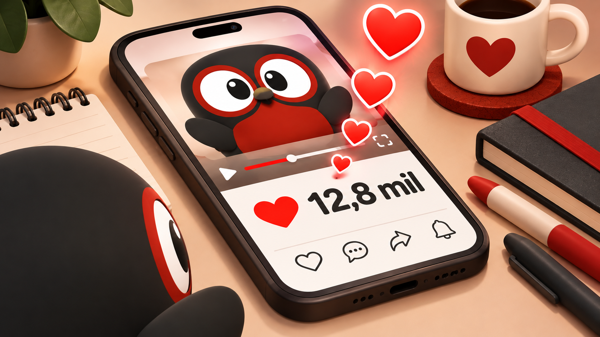
075 — O vídeo chega ao celular1672 × 941 px ·
Baixar PNG · linha 8, coluna 5 da prancha.
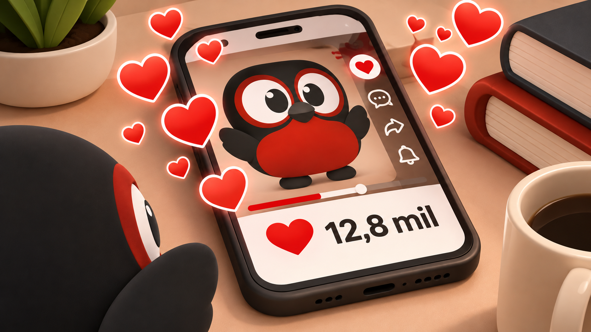
076 — As curtidas começam a subir1672 × 941 px ·
Baixar PNG · linha 8, coluna 6 da prancha.
1672 × 941 px ·
Baixar PNG · linha 8, coluna 7 da prancha.
17. Ele ainda não percebeu · 078–081
Ação e intenção: PAÓ emerge da fantasia, esgotado. Mesmo com a resposta começando no celular, a sala de indicadores deve permanecer apagada até o balão principal acender. Ele enxuga uma lágrima.
Câmera: Médio com a fantasia aberta; depois close emocional.
Movimento e expressão: Corpo pesado, cabeça baixa, olhos cansados; limpar lágrima com gesto delicado. Não transformar em celebração ainda.
Transição: O olhar reage a uma luz fora do quadro.
Som sugerido: Pequena pausa antes do sinal de sucesso.
078 — Sair da fantasia exausto1672 × 941 px ·
Baixar PNG · linha 8, coluna 8 da prancha.
1672 × 941 px ·
Baixar PNG · linha 8, coluna 9 da prancha.
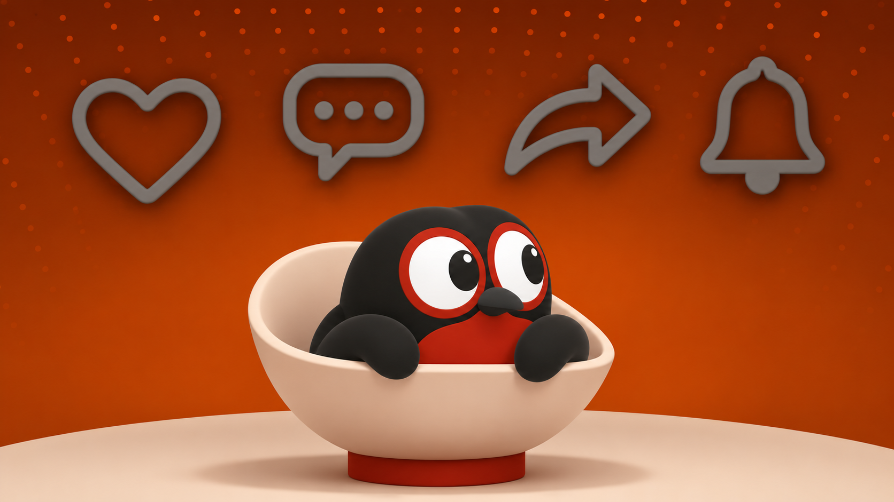
080 — Notar algo fora do quadro1672 × 941 px ·
Baixar PNG · linha 8, coluna 10 da prancha.
1672 × 941 px ·
Baixar PNG · linha 9, coluna 1 da prancha.
18. A virada · 082–083
Ação e intenção: O balão específico de comentário passa do cinza para um centro branco luminoso com halo vermelho. O mesmo objeto e pedestal permanecem no lugar. A rede começa a responder.
Câmera: Detalhe do balão; segundo quadro sustenta o estado aceso.
Movimento e expressão: Começar pelo balão principal e propagar para os sinais próximos. Manter volume e silhueta do balão durante a luz.
Transição: Corte para PAÓ percebendo o resultado.
Som sugerido: Um sinal de comentário reconhecível, seguido de expansão musical.
082 — O comentário acende1672 × 941 px ·
Baixar PNG · linha 9, coluna 2 da prancha.
1672 × 941 px ·
Baixar PNG · linha 9, coluna 3 da prancha.
19. Alívio · 084–084
Ação e intenção: PAÓ entende que o conteúdo encontrou alguém. A reação mistura sorriso e lágrimas, sem perder a delicadeza.
Câmera: Close de olhos e bico; fundo agora iluminado.
Movimento e expressão: Olhar encontra o sinal; pálpebras abrem; beak abre em sorriso; corpo relaxa. A emoção precisa ter duração.
Transição: Abrir para o encerramento escrito.
Som sugerido: Resolução musical acolhedora.
084 — Alívio do PAÓ1672 × 941 px ·
Baixar PNG · linha 9, coluna 4 da prancha.
20. O que fica · 085–087
Ação e intenção: A mensagem celebra o compromisso com criar. Primeiro: para quem ama o que faz. Depois: independente do engajamento. A rede iluminada é um desfecho da história, não uma promessa de resultado garantido.
Câmera: Planos amplos com área livre para tipografia. Quadro 087 funciona como respiro sem frase.
Movimento e expressão: Movimento de fundo discreto. Cada frase precisa de tempo real de leitura.
Transição: Assinatura da PAÓ.
Som sugerido: A música se acomoda; sem nova gag.
085 — Para quem ama o que faz1672 × 941 px ·
Baixar PNG · linha 9, coluna 5 da prancha.
1672 × 941 px ·
Baixar PNG · linha 9, coluna 6 da prancha.
1672 × 941 px ·
Baixar PNG · linha 9, coluna 7 da prancha.
21. Assinatura · 088–090
Ação e intenção: A carinha aprovada do PAÓ e o nome PAÓ assinam o filme sobre o ambiente de engajamento iluminado. Não mostrar Duocon, Duolingo ou ano do evento.
Câmera: Composição estável; os três quadros são poses de uma mesma assinatura.
Movimento e expressão: Entrada simples do símbolo e palavra, seguida de sustentação. Evitar trocar de logo entre quadros.
Transição: Final sustentado e fade curto, se desejado.
Som sugerido: Assinatura sonora breve e final limpo.
088 — Assinatura PAÓ — entrada1672 × 941 px ·
Baixar PNG · linha 9, coluna 8 da prancha.
1672 × 941 px ·
Baixar PNG · linha 9, coluna 9 da prancha.
1672 × 941 px ·
Baixar PNG · linha 9, coluna 10 da prancha.